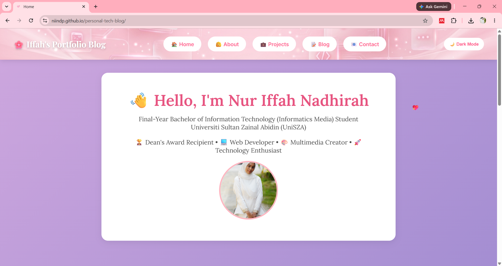
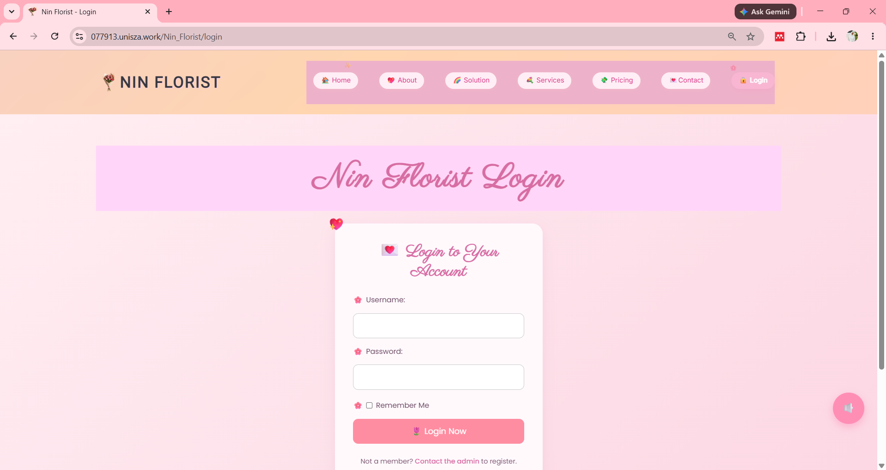
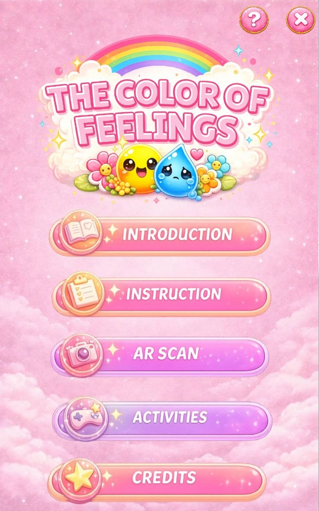
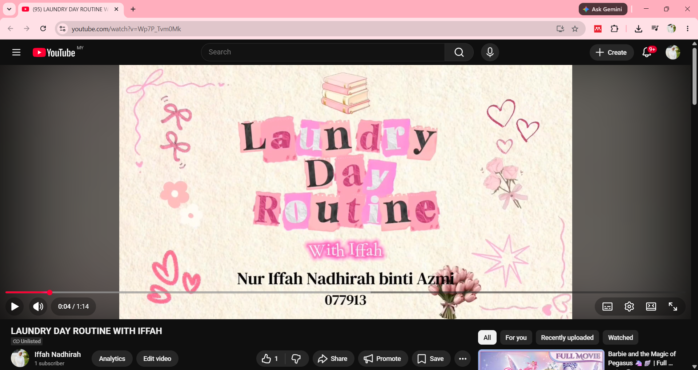
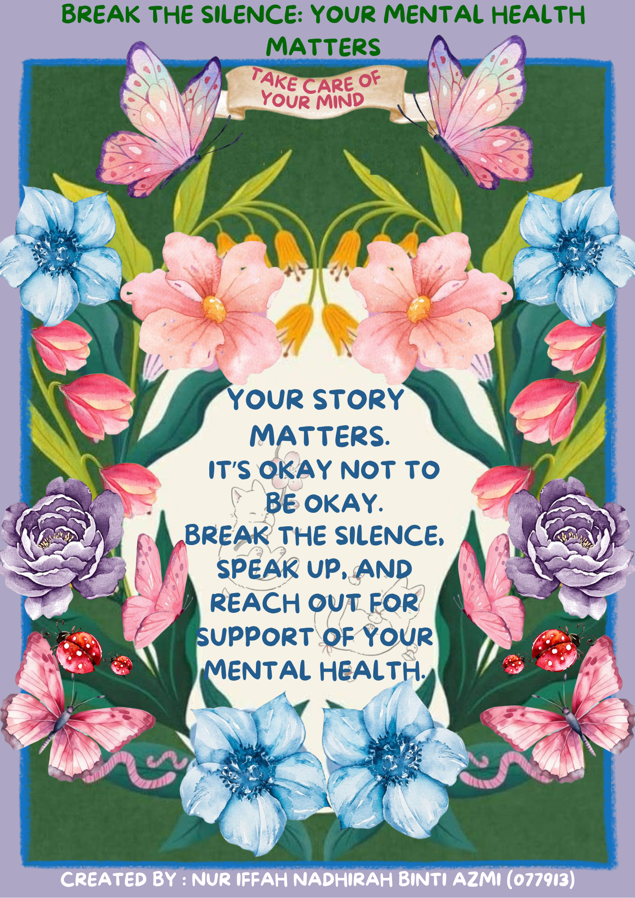
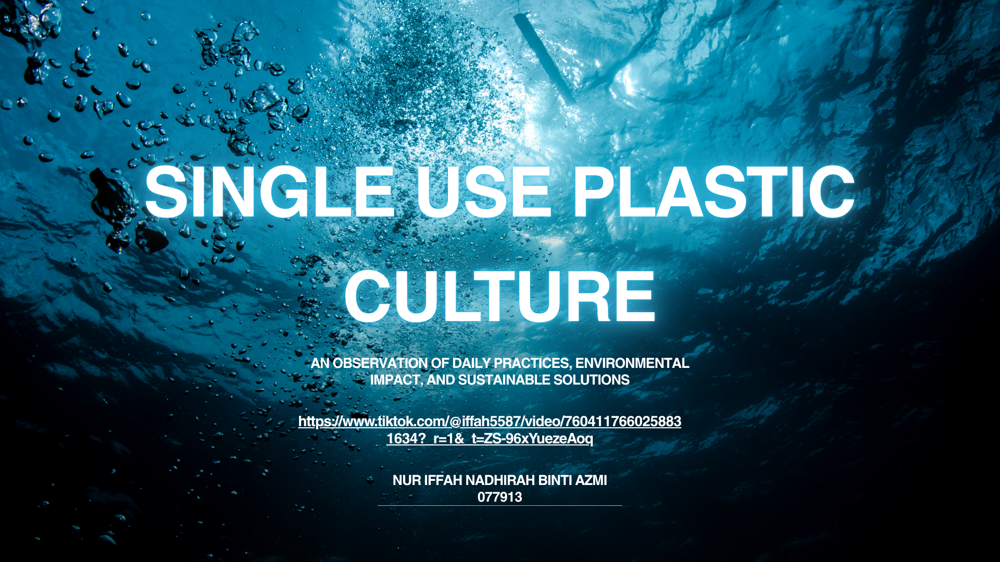
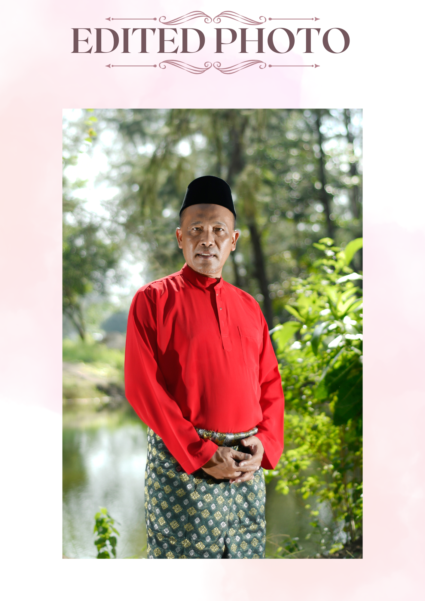
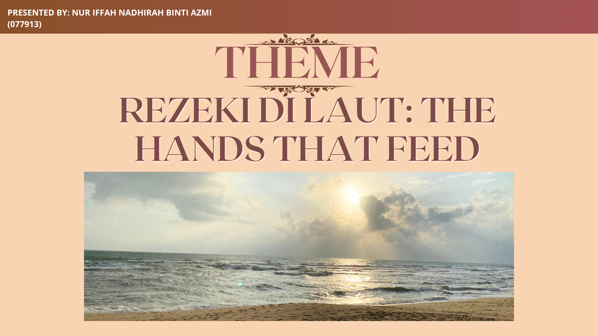
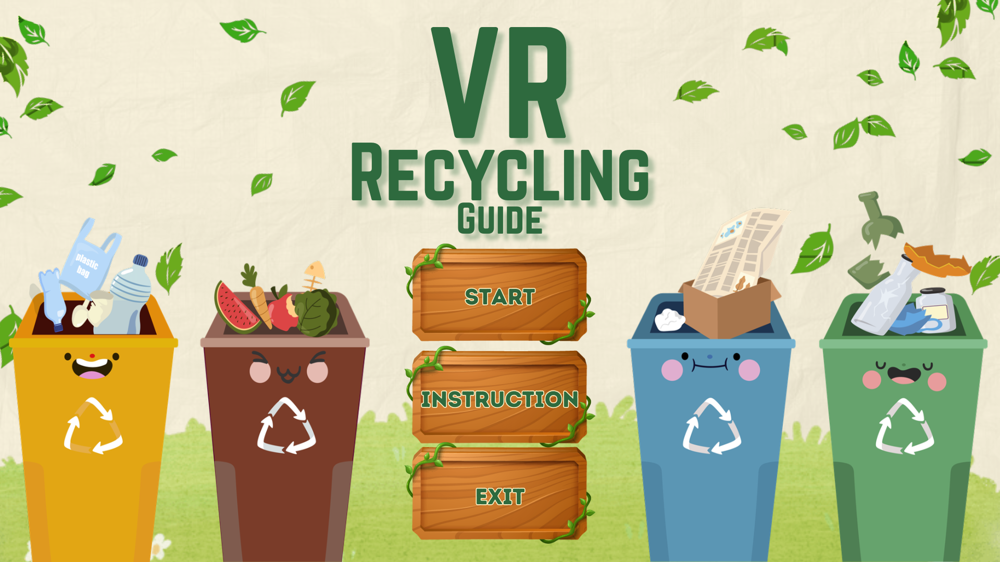

This section presents evidence of my learning journey through university courses, completed projects, and professional certifications.
A responsive portfolio website developed using HTML, CSS, and JavaScript.
Skills Demonstrated: HTML, CSS, JavaScript, Responsive Design, and GitHub Version Control.

Developed an informational website using multimedia content and responsive web design principles.
Skills Demonstrated: Web Design, Multimedia Integration, Content Organization, Responsive Design, and User Interface Development.
Best viewed using a PC or laptop for the optimal experience.

Developed an augmented reality learning experience focusing on self-awareness and interactive learning.
Skills Demonstrated: Augmented Reality Development, Interactive Learning Design, Multimedia Production, and Problem Solving.

Created a 3D animation project demonstrating multimedia design and storytelling skills.
Skills Demonstrated: 3D Modelling, Animation Principles, Creative Storytelling, and Digital Content Creation.

Created digital posters, promotional materials, and visual designs using graphic design principles and multimedia tools.
Skills Demonstrated: Canva, Adobe Illustrator, Adobe Photoshop, Visual Communication, Layout Design, Branding, and Creative Thinking.

Created multimedia video content involving planning, recording, editing, and post-production processes.
Skills Demonstrated: Video Editing, Audio Production, Storytelling, Multimedia Design, and Team Collaboration.

A photography project capturing cultural traditions, celebrations, and visual storytelling through photography.
Skills Demonstrated: Photography, Composition, Visual Storytelling, Image Editing, and Creativity.

A documentary-style photography project highlighting the lives and contributions of local fishing communities.
Skills Demonstrated: Photography, Visual Communication, Documentary Storytelling, Observation, and Creativity.

Developed an immersive virtual reality experience designed to enhance user interaction and engagement within a simulated environment.
Skills Demonstrated: Virtual Reality Development, User Experience Design, Interactive Media, Problem Solving, and Multimedia Integration.

Successfully completed the Cisco Introduction to Cybersecurity course, gaining knowledge of cybersecurity fundamentals, cyber threats, online safety, and security best practices.
Skills Gained: Cybersecurity Fundamentals, Security Best Practices, Online Safety, Threat Awareness, and Risk Management.
🏆 View Cisco Certificate